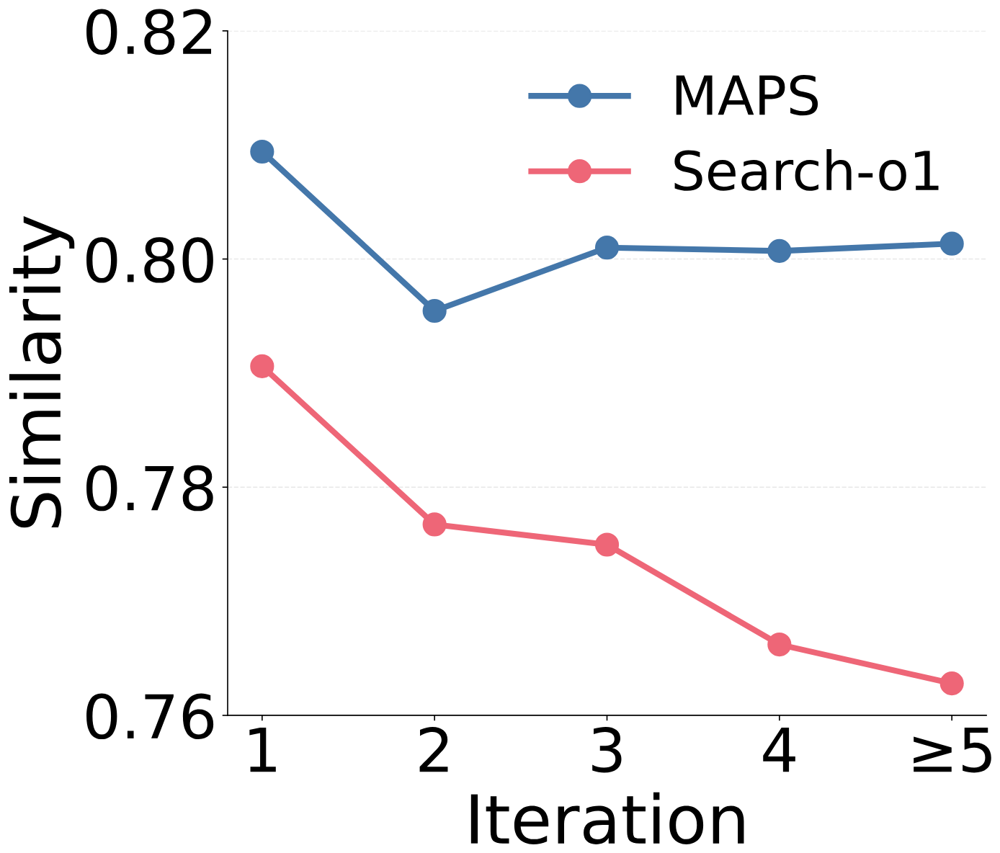

边推理边检索的 RAG 方法（如 Search-o1）每一步都让大模型参照之前全部的推理过程和子查询，写出下一个子查询去检索。东北大学和清华的这篇论文先做了一项测量：把每个子查询编码成向量，把相邻两步之间的移动按指数加权累加，称为"搜索动量"，再检验它能否预测下一个子查询相对原问题的偏移方向。结果是越往后预测得越准，作者据此认为后面的子查询会顺着前面已经走的方向继续偏下去。他们提出的 MAPS（宏观自适应并行推理框架）做了两处改动：每一轮只把检索到的知识和一段压缩过的推理状态交给模型，不再让它看历史子查询和完整推理；每一轮先列出几个互补的检索方向，各写一个子查询并行检索，再把结果合并。在 Qwen3-32B 上，MAPS 在六个问答数据集上的平均 Cover-EM（标准答案是否出现在回答里）为 56.0，最强基线 ParallelSearch 为 49.2，Search-o1 为 43.9。效果提升是实在的，但"搜索动量"这个诊断指标本身有不少可以商榷的地方，下文会具体说明。
1. 问题：子查询会不会越查越偏
多跳问题需要的证据分散在多篇文档里，所以现在常见的做法是让模型边推理边写子查询。第 t 步的子查询以前面全部推理和子查询为条件，早期一个跑偏的子查询就可能把后面的检索一路带偏。附录里的案例很典型：问题是"《La Môme Vert-De-Gris》和《The Pod People》哪部电影的导演出生更早"。Search-o1 第一次检索找到了导演 Olivier Dahan，随后却在推理里臆造出一个由 Natasha Lyonne 和 Amy Nicholson 执导的《The Pod People》，接着去查 Amy Nicholson 的生日，再一路查到纪录片制作、1930 年代的组织，最后查的是"农场假日协会"的会员情况，离原问题越来越远。MAPS 第一轮的几个并行子查询就找到了两位导演 Bernard Borderie 和 Juan Piquer Simón，之后只围绕他们的生日检索。
1.1 搜索动量怎么算
作者用 E5 模型把原问题和每一步子查询编码成向量 q_0、q_1、q_2……，然后定义：
- 动量 m_t = β_t·m_{t−1} + (1−β_t)·(q_t − q_{t−1})，也就是把每一步的移动量按权重累加，β_t 越大越看重历史；
- 对齐分数 S_t = cos(m_t, q_{t+1} − q_0)，即当前动量和"下一个子查询相对原问题的总偏移"之间的余弦相似度。
拟合数据是这样来的：在 2WikiQA、MuSiQue、HotpotQA 上各取 1,000 题跑 Search-o1（Qwen3-32B），只保留至少检索三轮的轨迹；每一步的 β_t 用 L-BFGS-B 在训练集上拟合，使 S_t 最大，再在另外 1,000 题上报告 S_t。
| 设置 | β1 | S1 | β2 | S2 | β3 | S3 | β4 | S4 | 平均 S |
|---|---|---|---|---|---|---|---|---|---|
| Search-o1，2WikiQA | 0 | 0.41 | 0.64 | 0.57 | 0.76 | 0.65 | 0.88 | 0.70 | 0.58 |
| Search-o1，MuSiQue | 0 | 0.31 | 0.54 | 0.52 | 0.72 | 0.65 | 0.83 | 0.69 | 0.54 |
| Search-o1，HotpotQA | 0 | 0.44 | 0.62 | 0.68 | 0.82 | 0.77 | 0.88 | 0.78 | 0.67 |
| Search-o1，三集合并 | 0 | 0.39 | 0.60 | 0.57 | 0.76 | 0.68 | 0.86 | 0.73 | 0.59 |
| MAPS，三集合并（附录） | 0 | 0.53 | 0.53 | 0.83 | 0.74 | 0.88 | 0.86 | 0.90 | 0.79 |
β_t 和 S_t 都随步数上升。作者的解读是：越往后，历史移动的权重越大，下一个子查询的偏移方向也越贴近已有动量，所以推理过程并不会自己纠正早期的偏离。
1.2 这个指标能说明多少
表格最后一行来自附录，正文没有讨论：MAPS 自己的对齐分数比 Search-o1 还高，平均 0.79 对 0.59，去掉解耦的 MAPS 也有 0.75。如果 S_t 高就意味着"顺着旧方向越偏越远"，那 MAPS 应该偏得更厉害，这和论文后面"MAPS 压住了动量"的结论相矛盾。更合理的理解是，S_t 衡量的是轨迹是否平滑、可预测，而不是是否偏离原问题。MAPS 每一轮把几个并行子查询的向量取平均作为 q_t，平均之后的轨迹本来就更平滑。
S_t 随步数上升，也有一部分是公式本身决定的。q_{t+1} − q_0 是从起点到下一步的总位移，它本身就是前面每一步移动量之和；而 β_t 越大，m_t 越接近这些移动量的累加。步数越多，两者共享的部分越多，即使每一步的方向完全随机，余弦相似度大致也会随 t 上升。所以"S_t 上升"本身不足以证明模型在惯性地偏离，真正有说服力的证据是第 4 节里子查询和标准证据的相似度变化。
2. 方法：MAPS
2.1 不让模型看到历史子查询
普通做法每一步都把完整轨迹交给模型，也就是每一轮的推理、子查询和检索结果。MAPS 只保留两样东西：一是之前每一轮从检索结果中提炼出的知识 o_1…o_{t−1}，二是一段每轮更新的推理摘要，其中不出现历史子查询。下一轮推理只以原问题、知识集和推理摘要为输入。知识足够回答或达到最大轮数时，用这三样输入生成最终答案。这一步的出发点是：模型看到上一轮写过的子查询，很容易在它的基础上改几个词再查一次，而只看到"已经知道了什么"，就更可能回到原问题去想还缺什么。
2.2 每一轮并行查几个方向
每一轮分三步：先根据原问题、已有知识和推理摘要列出 N 个互补的检索方向；再为每个方向写一个子查询，各自检索 top-K 文档后合并；最后由整理环节把各方向的证据合成本轮的知识 o_t，并更新推理摘要。和 ParallelSearch 的区别在于，ParallelSearch 直接并行写多个子查询，MAPS 先让模型说清楚要查哪几个方向，再把方向落成子查询。论文没有给出 N 的取值。
3. 实验结果
为了覆盖不同难度，评测分三类：单跳问答用 NQ（Natural Questions）和 PopQA，多跳用 2WikiQA、HotpotQA、MuSiQue，推理问答用 GPQA Diamond（198 道研究生水平的科学题），除 GPQA 外每个数据集随机抽 1,000 题。主干模型为 Qwen3-32B 和 Qwen3.6-35B-A3B，检索库是 2018 年 12 月的英文维基百科，检索器为 E5-base-v2，每次返回 5 段，最多 10 轮。
3.1 主结果
| 方法 | NQ | PopQA | 2WikiQA | HotpotQA | MuSiQue | GPQA | 平均 |
|---|---|---|---|---|---|---|---|
| Qwen3-32B | |||||||
| 不检索 | 25.0 | 19.4 | 27.3 | 21.3 | 7.1 | 44.4 | 24.1 |
| Vanilla RAG | 49.0 | 52.1 | 30.0 | 38.3 | 9.9 | 44.2 | 37.2 |
| Search-o1 | 53.1 | 56.5 | 43.7 | 40.0 | 23.7 | 46.4 | 43.9 |
| S3 | 59.5 | 60.6 | 37.2 | 38.3 | 19.4 | 60.7 | 45.9 |
| ParallelSearch | 57.2 | 60.4 | 53.6 | 43.5 | 30.9 | 49.8 | 49.2 |
| MAPS | 63.4 | 64.8 | 59.4 | 48.8 | 37.6 | 62.1 | 56.0 |
| Qwen3.6-35B-A3B | |||||||
| 不检索 | 39.4 | 39.4 | 42.1 | 34.8 | 19.4 | 76.8 | 42.0 |
| Search-o1 | 53.0 | 62.0 | 56.3 | 44.0 | 34.1 | 76.3 | 54.3 |
| ParallelSearch | 58.4 | 56.8 | 55.9 | 53.7 | 41.5 | 77.5 | 57.3 |
| MAPS | 64.1 | 69.3 | 65.8 | 55.1 | 45.2 | 79.2 | 63.1 |
MAPS 在两个主干模型、六个数据集上全部领先。提升最大的是多跳题：Qwen3-32B 上 MuSiQue 从 Search-o1 的 23.7 升到 37.6，2WikiQA 从 43.7 升到 59.4，这正是子查询链最长、最容易跑偏的场景。GPQA 的情况不同：Qwen3.6-35B-A3B 不检索就有 76.8，表现最好的几种检索方法也只比它高两三分，Self-RAG 和 IRCoT 反而低了将近 10 分，说明这个模型做 GPQA 基本用不上维基百科，这一列不能拿来证明检索策略的好坏。
3.2 消融
作者分别去掉三个组件：不先列方向（直接并行写子查询）、不并行（每轮只查一个方向）、不解耦（保留完整历史）。
| 变体（Qwen3-32B） | NQ | PopQA | 2WikiQA | HotpotQA | MuSiQue | GPQA | 平均 |
|---|---|---|---|---|---|---|---|
| MAPS | 63.4 | 64.8 | 59.4 | 48.8 | 37.6 | 62.3 | 56.1 |
| 不先列方向 | 63.0 | 64.3 | 55.8 | 46.9 | 35.6 | 46.0 | 51.9 |
| 不并行 | 60.1 | 61.2 | 54.1 | 45.2 | 33.1 | 45.3 | 49.8 |
| 不解耦 | 61.0 | 58.8 | 53.1 | 48.3 | 34.3 | 45.1 | 50.1 |
三个组件去掉任何一个，平均分都下降，但下降主要集中在 GPQA。以"不先列方向"为例，六个数据集合计少了约 25 分，其中 GPQA 一项就占 16 分，单跳的 NQ、PopQA 几乎不变，所以平均分的降幅大半是 GPQA 一列贡献的。
更奇怪的是，去掉任一组件后 GPQA 都掉到 45 分左右，和不检索的 44.4 差不多，而完整 MAPS 是 62.3。GPQA 只有 198 题，16 分大约是 33 道题。三个组件缺任何一个就全部失效，这种模式说明 GPQA 上的结果可能不稳定，论文没有解释，也没有报告多次运行的方差。此外，消融表里 MAPS 的 GPQA 和平均分（62.3、56.1）与主表（62.1、56.0）也对不上。
如果只看多跳数据集，结论更可信：去掉解耦后 2WikiQA 少 6.3 分，去掉并行后 MuSiQue 少 4.5 分，说明两个组件确实都在起作用。另外，"不并行"版本相当于带知识摘要的单路检索，平均 49.8，已经比 Search-o1 高 5.9 分；"不解耦"版本相当于先列方向的并行检索，平均 50.1，和 ParallelSearch 的 49.2 相当。两者合在一起才拉开到 56 分。
4. 子查询有没有被拉回来

这是全文最直接的证据。作者在所有带标准证据的样本上，计算每一轮生成的子查询和这道题每一篇标准证据文档的 E5 相似度，在样本内对这些子查询–证据对取平均，再在所有样本上平均，得到图里每一轮的分数（论文没有单独交代一轮里多个并行子查询怎样合并，按描述应是一并取平均）。Search-o1 从约 0.79 一路降到 0.76，说明越往后查的东西离真正需要的证据越远；MAPS 始终高出约 0.02 到 0.04，第 2 轮略降后回升到 0.80 左右并保持稳定。差值看起来不大，但 E5 向量之间的余弦相似度整体都挤在较高的区间里，0.02 到 0.04 的稳定差距有实际意义。

累计偏移图从另一个角度说明同一件事：每一轮算一次搜索动量和原问题向量的余弦相似度，记下它比上一轮变了多少，再把这些变化逐轮累加。论文没有说明累加时是否取绝对值；如果不取，累加值就等于当前这一轮的余弦减去第一轮的余弦。随轮次增加，MAPS 的累加值涨得比 Search-o1 和不解耦的版本都慢，即动量方向更稳定。
4.1 停止轮次和成本
论文的停止轮次分布图里，MAPS 有 62.7% 的样本在第 2 步结束，Search-o1 和 ParallelSearch 分别是 50.4% 和 58.5%；但 MAPS 在第 1 步就结束的只有 1.8%，另两者是 10.2% 和 13.3%；需要 5 步及以上的，MAPS 是 14.9%，另两者是 12.5% 和 5.1%。图上标出的平均步数，MAPS 约为 2.7，略高于 Search-o1 的约 2.6 和 ParallelSearch 的约 2.3。这意味着 MAPS 并没有比 Search-o1 少跑几轮，而它每一轮还要做"列方向、写子查询、整理"三次调用和 N 次检索，所以总成本几乎肯定更高。论文没有报告调用次数、token 用量或延迟，这是评估这个方法时最大的缺口。
5. 局限
除了上面提到的成本缺口，还有几点值得注意。方向数 N 没有给出，也没有做 N 的敏感性实验，读者无法判断提升里有多少来自"多查几次"。检索器是较弱的 E5-base-v2，语料是 2018 年的维基百科；换成更强的检索器或重排模型后，子查询写得差一点也许能被检索端兜住，差距是否保持没有验证。搜索动量的分析只在 Search-o1 的轨迹上拟合，而且如 1.2 节所说，S_t 本身更像平滑度指标，用它来论证"偏移"并不充分。评估指标 Cover-EM 只看标准答案是否出现在回答里，回答越长越容易命中，MAPS 的回答长度和基线是否相当，论文也没有报告。
6. 实践意义
做多跳 RAG 智能体时，有两个改动可以低成本试一试。第一，每一轮不要把历史子查询喂回给模型，只给提炼后的知识和一段推理摘要，让模型从"还缺什么"出发写下一个子查询，而不是在上一个子查询上改词。第二，写子查询之前先让模型列出几个互补方向，比如两个实体各查一路。论文的多跳结果和证据相似度曲线都支持这两点。但上线前需要自己测量增加的调用次数和延迟，而且不要把"搜索动量"的对齐分数当作监控偏移的指标，直接看子查询和原问题或已知证据的相似度更可靠。
读完这篇，你觉得
夜读鸮记下了，谢谢你的反馈。
点一下即可，无需登录；再点一次撤回。只统计匿名次数，不记录你是谁。
讨论
欢迎补充实验细节、复现经验或不同看法。需 GitHub 登录。
正在加载讨论…